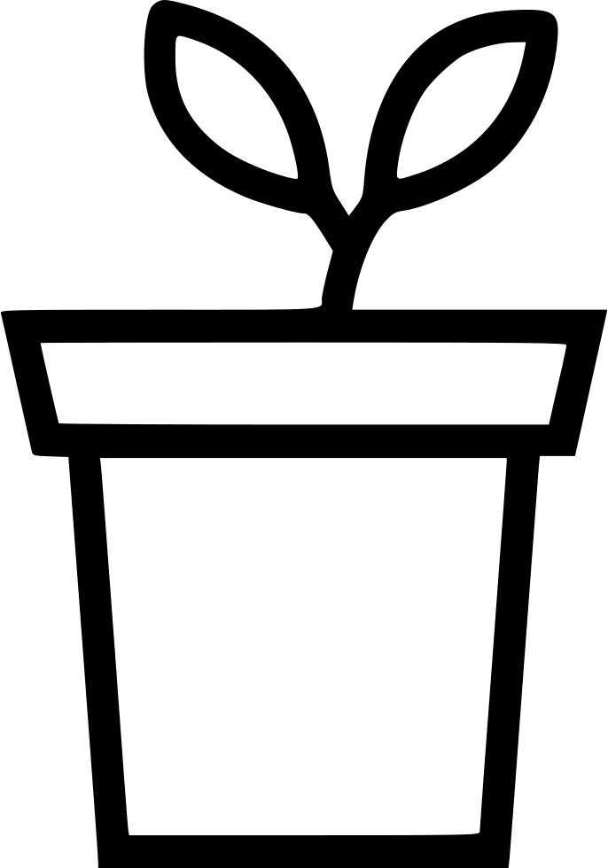

Playful Plants
A fully featured media catalog created for Cornell's research group Playful Plants.
Used: PHP, HTML, CSS, SQLite
Learn More →
I also enacted user access controls for the admin and consumer views, thus preventing unauthorized users from modifying records. Pictured below is the sign in page in order to gain admin priveleges.
X
For the final project of course CS 2300: Intermediate Design and Programming for the Web, I was tasked with designing and implementing a fully featured media catalog for the members of Playful Plants, a research group at Cornell. They have hundreds of plants of various types in their records and were looking for a nice and clean way to advertise them. I included functionality for tagging, uploading, sorting, filtering, editing, and deleting plant catalog entries using PHP, HTML, CSS, and SQLite.I also enacted user access controls for the admin and consumer views, thus preventing unauthorized users from modifying records. Pictured below is the sign in page in order to gain admin priveleges.

Sorry!
An OCaml-based command-line game that resembles the popular board game "Sorry!".
Used: OCaml, ANSITerminal
Learn More →
Here the user has chosen pawn 3 and advanced the rolled 2 spaces on the board.
X
I worked on this project as part of the course CS 3110: Functional Programming. This involved collaborating with 2 other engineers to develop an OCaml-based game that resembles the popular board game "Sorry!". In addition to our work sessions, we scheduled weekly meetings with our PM to ensure that all expectations were met, while also incorporating any feedback given. We also supported both multi-player and CPU modes, and utilized GUIs and design principles to create an appealing command-line interface. For this project we utilized OCaml and incorporated ANSITerminal for the game prompts.Here the user has chosen pawn 3 and advanced the rolled 2 spaces on the board.
Spotify API
A bot that saves the personally curated "Discover Weekly" playlists that are generated by Spotify.
Used: Python, Spotify Web API
Learn More →
X
For this personal project I created a bot that leverages the Spotify API to allow a user to automatically save the personally curated "Discover Weekly" playlists that are generated by Spotify. When set to run once a week, a user's playlist will be saved into their playlist library before it disappears and is replaced by the next week's playlist. This solves the issue of not being able to recover them once they are refreshed each week. I used Python and the Spotify Web API to complete this.